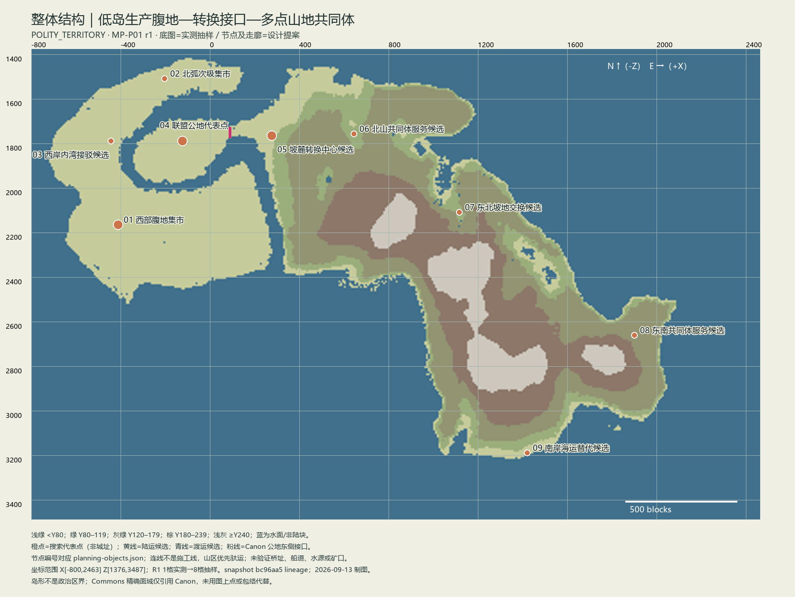

MP-P01 / r1 / HANDOFF_READY（到区域 Planner） · DESIGN_PROPOSAL · world writes=0
坐标点为搜索代表，路线为抽样候选；不是已建城镇或道路。资料与提案分开，完整因果和分支见 规划方案。

| SETTLEMENT-01 | 西部腹地集市 | [-412, 2164] | 低地粮食/牲畜与家庭加工先可自立；丰余交换使腹地节点先于联盟出现 |
| SETTLEMENT-02 | 北弧次级集市 | [-204, 1508] | C 形陆路绕行成本使北弧不必每日依赖南部中心 |
| SETTLEMENT-03 | 西岸内湾接驳候选 | [-444, 1788] | 接近公地的内湾岸段减少陆运绕行，但岸坡和航道尚待核实 |
| SETTLEMENT-04 | 联盟公地代表点 | [-124, 1788] | 共同主权降低地方主城独占议会的制度成本 |
| SETTLEMENT-05 | 坡麓转换中心候选 | [276, 1764] | 低地进入山坡的成本转换使货物分批、换载和结算集中 |
| SETTLEMENT-06 | 北山共同体服务候选 | [644, 1756] | 适度高地停留面连接周边生产点；具体矿口未定，不能先造矿城 |
| SETTLEMENT-07 | 东北坡地交换候选 | [1116, 2108] | 山脊以东的侧向联系避免所有货物翻越主峰 |
| SETTLEMENT-08 | 东南共同体服务候选 | [1900, 2660] | 狭长岛体使远端地方服务有理由独立，不必日常进公地 |
| SETTLEMENT-09 | 南岸海运替代候选 | [1420, 3188] | 若重货足够且航行可靠，绕岛海运可替代跨脊重车 |